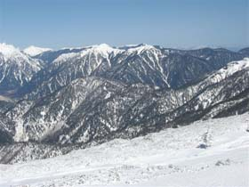

|
|||||||||||||||||||||||||||
|
|||||||||||||||||||||||||||
|
乗鞍山系 猫岳・四ツ岳スキー |
| 開 催 日 | ２０１０年３月１３〜１４日 | |||
| リーダー | 小山恭吾 | |||
| 報 告 者 | 小林義亮 | |||
| HP制作者 | 小林義亮 | |||
| 参加者数 | ９名 （会員９名） | |||
| 毎シーズン小山さんをリーダーとして北ア南部や乗鞍山系に分け入っているが、今回は乗鞍スカイラインに近い猫岳と四ツ岳を目指した。 夏山シーズンであればスカイラインの東側にある小さいピークであるが、今の季節では標高差１４００メートルを足で稼ぐハードなコースに一変している。 |
| １日目 ３月１３日（土） |
| 前夜着のメンバーと１３日早朝集合場所の宿に集まったが昨夜来から南の強風が吹き、気温３度と暖かいため雨模様。結構強い雨でずぶ濡れのまま、雪模様の山頂を目指すのは危険と自らを慰めて、あるいはたまには良いさと言いわけにして、標高１３００メートルにある平湯随一の高級旅館の大きな露天ぶろに浸かって明日への鋭気を養った。 それでも元気な連中、５名が雨の小やみになったのを幸いと、平湯大滝上流、標高１６００メートル近くにある沢の状態の偵察に向かった。雪は雨をタップリ吸収して上りは潜り、下りはターンがままならずと、結構厳しい偵察行であった。戻ってからは再び暖かい温泉に入り、明日への英気を養った。 |
| スキー場から谷筋を少し進み、急斜面に取り付く。１時間３０分かかって到達した平湯大滝上流の谷は雪に埋まっていた。四ツ岳はさらにここから標高差１０００メートル以上ある。 |
| ２日目 ３月１４日（日） |
| 昨日の悪天候から一転して無風快晴。宿からは笠が岳の真っ白な山頂が青空に映える。今日中に帰宅するには時間的に四ツ岳は無理と判断して猫岳へと向かう。 |
| A | ||
| 平湯トンネルを出た所に車を置いて出発準備をする。雲一片もない快晴。写真の左側には急斜面ではあるが尾根筋につながるゲレンデ状態の斜面があるが、沢が入っているのでストレートには上れない。我々はトンネル側から上って、下山は下流の久手牧場側に下りるコースをとった。 | 後ろには一昨年に登った輝山が迫り上がる。あのときより雪は少なそうである。 |
 |
A | |
| スカイラインは時間がかかるので小沢をわたり左手の斜面を登る | 林道も利用する |
| A | ||
| 尾根筋を上って夫婦松（１９７３メートル）まで来ると、澄んだ空気のもと伸びやかな眺望が拡がる。大笠、笈、そして名峰加賀白山、大日などがずらりと並ぶ。はるか左奥には伊吹らしき孤峰が望見される。 | 誰もいない雪原となっている夫婦松展望台には奇妙な構造物がある。観光バスが行き来する夏と違い、場違いな、たとえば猿の惑星に迷い込んだような奇妙な感じをうける。 |
| A | ||
| 夫婦松から樹林帯を行く。時々明るく開けたスカイラインを横切る | スカイラインで一息 |
| A | ||
| スカイラインを離れて、猫の斜面に取り付く。さすがに北ア、冷たい風に磨かれた斜面はアイスバーンとなっている。 | もうすぐ山頂 |
| 下山地点の久手牧場 |
| 山頂からの展望 |
| A | A | |||
| 槍、穂高、焼岳、常念、上高地 | 乗鞍 | 畳平へのスカイライン |
|  | A | A | ||
| 常念、霞沢、安房 | 十石 | 四ツ岳 |
| 槍、穂高を背景にメンバーの満足そうな顔 |
| 滑降が下手なHP制作者は例によってベテランの格好良い写真を一枚も撮る余裕がありませんでした。メンバーのみなさん、ごめんなさい。 |
| 軌 跡 図 |
| 赤線が上り、茶線が下り。右端上は１３日の偵察行 |
| 猫岳コースタイム |
| ０８：１５ | 平湯トンネル出口出発 |
| １３：１５ | 猫岳山頂到着 |
| １３：４０ | 山頂より滑降開始 |
| １５：３０ | 久手牧場 |